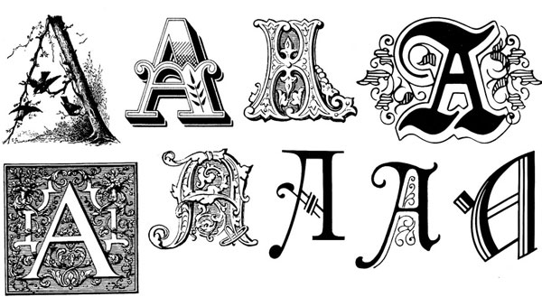

Romaji (Romaji)
Romaji is completely useless. Don’t learn it because you already know it - Koichi

Romaji is the “Romanization of Japanese.” If you are reading this text, then you already know romaji. Basically, it’s just the English alphabet, and although there are some funny rules when using it to write in Japanese, it’s actually pretty self explanatory… oh, and did I mention pretty much useless to learn?
But, this is Japanese we’re talking about. There’s pretty much no reason to learn too much more about romaji since a) it isn’t really that useful for learning Japanese, at least in the long term, and b) you already know how to use it for the most part. Take a look at some examples:
Karate, sake, sumo, sushi, sashimi, bento, etc…
There’s a good chance you knew a lot of these words. They’re still “Japanese,” the only difference is we wrote them using the English alphabet.
Unfortunately, romaji is actually pure evil, so I won’t waste your time with it. Although this text will be using romaji for a few chapters more, during that time you’ll be hard at work learning the next Japanese “alphabet,” hiragana so we can ditch the useless romaji. Trust me, romaji might help you learn Japanese faster in the (very) short term, but if you’re actually serious about learning Japanese, you’ll want to spend your valuable time focusing on hiragana, katakana, and kanji.
Want more specifics on why we aren’t spending much time on romaji? Here you go:
- There are too many different ways to write romaji. I’ve seen around five different “schools of thought” on how romaji should be written. With all these differences, it makes it hard for beginners to know how to pronounce certain things when written this way. Hiragana, katakana, and kanji on the other hand, are nice and consistent (oh, and did I mention useful?).
- Romaji will slow you down, in the long run. Only so much you can do before romaji will actually become a handicap to your Japanese learning.
- You’ll miss out. There are so many potential Japanese study resources out there that require you to at least know hiragana. If you can’t do that, you’re missing out big time.
- People don’t use romaji in Japan, so neither should you. Sure, you’ll see it from time to time, but 99.9% of the time you’ll be using anything but romaji.
- Romaji will hurt your pronunciation. The English alphabet wasn’t made for reading and writing Japanese. If you use it, there are some things that don’t quite mesh right, which means your pronunciation may be hurt.
Anyways, now that we’ve spent all our time learning why you shouldn’t learn romaji, let’s spend some time knowing about things you should learn. Next page is all about hiragana.